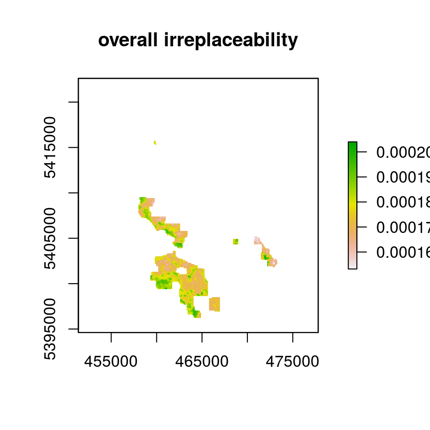
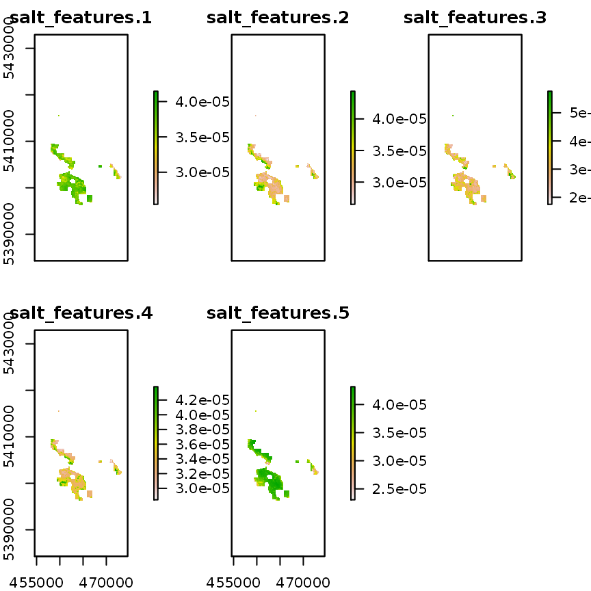

Introduction
This aim of this tutorial is to show how raster data can used to build conservation problems with the prioritizr R package. The data used here is a subset of a much larger data set for the Georgia Basin obtained as part of an online Marxan-based planning tool created for the Coastal Douglas-fir Conservation Partnership (CDFCP; Morrell et al. 2017). For simplicity, we focus only on Salt Spring Island, British Columbia. Salt Spring Island is central to the region and supports a diverse and globally unique mix of dry forest and savanna habitats. Today, these habitats are critically threatened due to land conversion, invasive species, and altered disturbance regimes. Known broadly as the Georgia Depression-Puget Lowlands, this region includes threatened Coastal Douglas-fir forest and Oak-Savannah habitats, also referred to as Garry oak ecosystems.

Extent of Coastal Douglas-fir Conservation Partnership Tool area and location of Salt Spring Island
For more information on the data set refer to the Marxan tool portal and the tool tutorial.
Please note that this tutorial uses data from the prioritizrdata R, so ensure that it is installed before trying out the code yourself.
Exploring the data
This data set contains two items. First, a single-band raster planning unit layer where each one hectare pixel represents a planning unit and contains its corresponding cost (BC Assessment 2015). Second, a raster stack containing ecological community feature data. Field and remote sensed data were used to calculate the probability of occurrence of five key ecological communities found on Salt Spring island. Each layer in the stack represents a different community type. In order these are; Old Forest, Savannah, Wetland, Shrub, and a layer representing the inverse probability of occurrence of human commensal species. For a given layer, the cell value indicates the composite probability of encountering the suite of bird species most commonly associated with that community type.
First, load the required packages and the data.
# load packages library(prioritizrdata) library(prioritizr) # load planning unit data data(salt_pu) # load conservation feature data data(salt_features)
Let’s have a look at the planning unit data. Note that we log-transformed the raster to better visualize the variation in planning unit cost.
# print planning unit data print(salt_pu)
## class : RasterLayer
## dimensions : 280, 200, 56000 (nrow, ncol, ncell)
## resolution : 100, 100 (x, y)
## extent : 454589.9, 474589.9, 5394614, 5422614 (xmin, xmax, ymin, ymax)
## crs : +proj=utm +zone=10 +datum=WGS84 +units=m +no_defs +ellps=WGS84 +towgs84=0,0,0
## source : memory
## names : salt_pu
## values : 0.02552, 10000 (min, max)# plot histogram of the planning unit costs hist(values(salt_pu), main = "Distribution of costs", xlab = "Planning unit costs")

# plot map showing the planning units costs on a log-scale plot(log(salt_pu), main = "Planning unit costs (log)")

Next, let’s look at the feature data.
# print features print(salt_features)
## class : RasterStack
## dimensions : 280, 200, 56000, 5 (nrow, ncol, ncell, nlayers)
## resolution : 100, 100 (x, y)
## extent : 454589.9, 474589.9, 5394614, 5422614 (xmin, xmax, ymin, ymax)
## crs : +proj=utm +zone=10 +datum=WGS84 +units=m +no_defs +ellps=WGS84 +towgs84=0,0,0
## names : salt_features.1, salt_features.2, salt_features.3, salt_features.4, salt_features.5
## min values : 0.3595050, 0.2979212, 0.1132785, 0.4013101, 0.3703639
## max values : 0.9312289, 0.6608167, 0.6434712, 0.8249719, 0.9032656# plot map showing the distribution of the features plot(salt_features, main = names(salt_features))

Formulating the Problem
In this tutorial, we will only cover a few of the different ways that conservation planning problems can be formulated. The examples used here are provided to highlight how different parameters can substantially—or only slightly—alter solutions. Here, we use the minimum set objective to fulfill all targets and constraints for the smallest cost. This objective is similar to that used in the Marxan decision support tool. To keep this simple, we will set biodiversity targets at 17 % to reflect the Aichi Biodiversity Target 11. Because properties on Salt Spring Island can either be acquired in their entirety or not at all, we leave the decision framework as the default; binary decision making. This means that planning units are either selected in the solution or not selected in the solution—planning units cannot be partially acquired.
Now we will formulate the conservation planning problem.
# create problem p1 <- problem(salt_pu, salt_features) %>% add_min_set_objective() %>% add_relative_targets(0.17) %>% add_binary_decisions() %>% add_default_solver() # print problem print(p1)
## Conservation Problem
## planning units: RasterLayer (19794 units)
## cost: min: 0.02552, max: 10000
## features: salt_features.1, salt_features.2, salt_features.3, ... (5 features)
## objective: Minimum set objective
## targets: Relative targets [targets (min: 0.17, max: 0.17)]
## decisions: Binary decision
## constraints: <none>
## penalties: <none>
## portfolio: default
## solver: Gurobi [first_feasible (0), gap (0.1), numeric_focus (0), presolve (2), threads (1), time_limit (2147483647), verbose (1)]Note that the %>% notation is used to attach the objectives, targets, and decisions to the problem. Since binary-type decisions are the default decision-type, we don’t have to explicitly specify the decision-type, but we specify it here for clarity.
Solving the problem
The prioritizr R package supports three different integer linear programming solver packages: gurobi, Rsymphony, and lpsymphony. There are costs and benefits associated with each of these solvers, but the solver itself should have little impact on the actual solution returned (though certain solvers may take longer to return solutions than others).
First, remember that the solvers must be installed. You can check if these packages are installed by running the code below. Note that the gurobi package is distributed with the Gurobi commercial software suite, and is not available on the Comprehensive R Archive Network (CRAN). Please refer to the Gurobi Installation Guide for more information on installing the gurobi R package.
Now we will try solving the problem using the different solvers (see ?solve for more information). We will also experiment with limiting the maximum amount of time that can be spent looking for each solution when solving the problem (using the time_limit parameter), and see how this alters the solutions.
titles <- c() # create vector to store plot titles s1 <- stack() # create empty stack to store solutions # create new problem object with added solver if (require("Rsymphony")) { titles <- c(titles, "Rsymphony (5s)") p2 <- p1 %>% add_rsymphony_solver(time_limit = 5) s1 <- addLayer(s1, solve(p2)) }
## Warning in res(x, ...): overwriting previously defined solverif (require("Rsymphony")) { titles <- c(titles, "Rsymphony (10s)") p3 <- p1 %>% add_rsymphony_solver(time_limit = 10) s1 <- addLayer(s1, solve(p3)) }
## Warning in res(x, ...): overwriting previously defined solverif (require("gurobi")) { titles <- c(titles, "Gurobi (5s)") p4 <- p1 %>% add_gurobi_solver(time_limit = 5) s1 <- addLayer(s1, solve(p4)) }
## Warning in res(x, ...): overwriting previously defined solverif (require("lpsymphony")) { titles <- c(titles, "lpsymphony (10s)") p5 <- p1 %>% add_lpsymphony_solver(time_limit = 10) s1 <- addLayer(s1, solve(p5)) }
## Warning in res(x, ...): overwriting previously defined solverNow let’s visualize the solutions.

We can see that all of the solutions are very similar. Therefore it would appear that for this particular problem, the solution is not highly sensitive to solver choice. For larger and more complex problems, however, we would expect the solution from Gurobi to be far superior when setting time limits. At a glance, it also appears that the time limit settings did not largely impact the solutions (5 seconds vs. 10 seconds), but a more rigorous analysis is needed to investigate this.
Adding connectivity
Isolated and fragmented populations are often more vulnerable to extinction. As a consequence, landscape connectivity is a key focus of many conservation planning exercises. There are a number of methods that can be used to increase connectivity in prioritizations. These methods typically involve adding constraints to a problem to ensure that solutions exhibit a specific property (e.g. selected planning units that form a contiguous reserve), or adding penalties to a problem to penalize solutions that exhibit specific properties (e.g. high levels of fragmentation). Here we will explore a couple different strategies for increasing connectivity in solutions. For brevity, we will use default solver which is automatically added to a problem if a solver is not manually specified.
# basic problem formulation p6 <- problem(salt_pu, salt_features) %>% add_min_set_objective() %>% add_relative_targets(0.17) %>% add_binary_decisions() %>% add_default_solver() # print problem print(p6)
## Conservation Problem
## planning units: RasterLayer (19794 units)
## cost: min: 0.02552, max: 10000
## features: salt_features.1, salt_features.2, salt_features.3, ... (5 features)
## objective: Minimum set objective
## targets: Relative targets [targets (min: 0.17, max: 0.17)]
## decisions: Binary decision
## constraints: <none>
## penalties: <none>
## portfolio: default
## solver: Gurobi [first_feasible (0), gap (0.1), numeric_focus (0), presolve (2), threads (1), time_limit (2147483647), verbose (1)]titles2 <- c() # create vector to store plot titles s2 <- stack() # create empty stack to store solutions # no connectivity requirement titles2 <- c(titles2, "No connectivity") s2 <- addLayer(s2, solve(p6)) # require at least two for each selected planning unit titles2 <- c(titles2, "Neighbor constraints (two)") p7 <- p6 %>% add_neighbor_constraints(2) s2 <- addLayer(s2, solve(p7)) # impose small penalty for fragmented solutions titles2 <- c(titles2, "Boundary penalty (low)") p8 <- p6 %>% add_boundary_penalties(0.0005, 0.5) s2 <- addLayer(s2, solve(p8)) # impose high penalty for fragmented solutions titles2 <- c(titles2, "Boundary penalty (high)") p9 <- p6 %>% add_boundary_penalties(0.05, 0.5) s2 <- addLayer(s2, solve(p9))

Here we can see that adding the constraints and penalties to the problem has a small, but noticeable effect on the solutions. We would expect to see larger difference between the solutions for problems that contain more than five conservation features. You may also wish to explore the add_connectivity_penalties and add_feature_contiguity_constraints functions. These functions use additional data on landscape resistance to provide a more accurate parametrization of connectivity and, in turn, deliver more effective solutions.
Irreplaceability
Conservation plans can take a long time to implement. Since funding availability and habitat quality can decline over time, it is critical that the most important places in a prioritization are scheduled for protection as early as possible. For instance, some planning units in a solution might contain many rare species which do not occur in any other planning units. Alternatively, some planning units might offer an especially high return on investment that reduces costs considerably. As a consequence, conservation planners often need information on which planning units selected in a prioritization are most important to the overall success of the prioritization. To achieve this, conservation planners can use irreplaceability scores to calculate the “importance” or “priority” of each planning unit selected in a solution.
Let’s assume that the low boundary length solution (s2[[3]]) in the previous section was the best solution. If we wanted to actually implement this solution, it is important that we understand which of the formatC(cellStats(s2[[3]], "sum"), big.mark = ",") planning units are the most important. So, let’s calculate irreplaceability scores for each of the planning units selected in that solution using the Ferrier method (Ferrier et al. 2000). This method provides overall irreplaceability scores for each planning to indicate the overall importance of each planning unit. It also provides irreplaceability scores for each planning unit and each feature, so we can see which planning units in the solution are important for meeting the targets for different features.
# calculate irreplaceability scores irrep <- ferrier_score(p9, s2[[3]]) # plot overall irreplaceability scores plot(irrep[["total"]], main = "overall irreplaceability")

# we can see that the colors are mostly green because the raster has 0 values # for planning units that were not selected in the solution. This causes # all the non-zero values to essentially "look the same". To address this, we # will set values in the irreplaceability data to NA for planning units not # selected in the solution irrep2 <- irrep for (i in seq_along(nlayers(irrep))) { irrep2[Which(s2[[3]] < 0.5)] <- NA_real_ } # plot overall irreplaceability scores with only selected planning units plot(irrep2[["total"]], main = "overall irreplaceability")


We can see that the prioritized planning units located on the southwestern side of the study area have the highest irreplaceability scores. This result suggests that protecting these places may be critical to the overall success of the prioritization.
References
BC Assessment. (2015). Property Information Services. URL https://www.bcassessment.ca/ [accessed 13 June 2016].
Ferrier, S., Pressey, R.L. & Barrett, T.W. (2000). A new predictor of the irreplaceability of areas for achieving a conservation goal, its application to real-world planning, and a research agenda for further refinement. Biological Conservation, 93, 303–325.
Morrell, N., Schuster, R., Crombie, M. & Arcese, P. (2017). A Prioritization Tool for the Conservation of Coastal Douglas-fir Forest and Savannah Habitats of the Georgia Basin. The Nature Trust of British Colombia, Coastal Douglas Fir Conservation Partnership, and the Department of Forest and Conservation Sciences, University of British Colombia, URL http://peter-arcese-lab.sites.olt.ubc.ca/files/2016/09/CDFCP_tutorial_2017_05.pdf [accessed 9 October 2017].